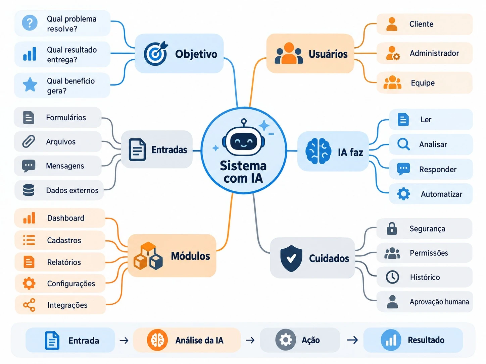

Tutorial de instalação e uso da skill exclusiveapp no Claude e no Codex.
Um "assistente especialista" que você instala uma vez e usa sempre que quiser criar um app.
Faz as perguntas certas, uma de cada vez, e só avança quando você responde. Você não precisa saber o que perguntar.
Guarda o seu tom de voz palavra por palavra e usa nos textos do app.
Você cria uma pasta e coloca logo, cores, PDFs e prints. A skill lê tudo de lá.
Celular, tablet ou computador: ela explica o design responsivo e ajuda a escolher.

Duas coisas. Se já tem, pule para a próxima página.
Use o Claude Code (no aplicativo Claude para computador, aba Code) ou o Codex. Faça login com a sua conta.
O app que você vai criar poderá ser usado em qualquer aparelho. Mas a criação acontece no computador.
Você só precisa pedir para o Claude instalar. Ele faz o resto.
No aplicativo Claude, entre na aba Code.
Copie e cole exatamente assim:
O Claude baixa a skill e instala. Se ele pedir permissão, aprove.
Feche e abra de novo para ele reconhecer a nova skill.
Quatro passos, e a partir daí a skill conduz.
Na Área de Trabalho: botão direito → Nova Pasta. Dê um nome simples, como meu-app.
Logo, paleta de cores, PDFs importantes, prints de referência e o PDF do briefing Exclusive, se tiver. Não tem tudo? Sem problema, a skill segue e marca o que falta.
No app Claude (aba Code), escolha a pasta meu-app como pasta de trabalho.
Escreva no chat:
São 12 etapas. Você sempre vê onde está.
Exemplo do progresso que aparece no chat: 42% · etapa 5 de 12
Você sobe o PDF ou pede para a skill procurá-lo na pasta. Sem PDF, ela pergunta os campos exatamente como na plataforma: Negócio, Público-Alvo e Tom & Voz.
A skill explica de forma simples o que é um app e faz perguntas curtas sobre o seu negócio e o seu jeito de falar.
Pequenos hábitos que deixam o resultado muito melhor.
Escreva como você fala. Quanto mais natural, mais o app soa como a sua marca.
Um post ou uma mensagem que você escreveu e gostou vale mais que mil explicações.
A primeira versão terá até 3 módulos essenciais. O resto fica para depois.
Tudo fica salvo em PROJETO.md e TOM-DE-VOZ.md. Volte outro dia e diga “quero continuar meu app”.
| Problema | O que fazer |
|---|---|
| A skill não aparece ou não responde | Reinicie o Claude Code. Se continuar, peça de novo: Instalar https://github.com/mickfelipe/exclusiveapp |
| A skill não achou meu PDF do briefing | Coloque o arquivo na pasta do app (de preferência em 02-briefing) ou envie direto no chat. |
| Quero mudar uma resposta | Diga qual etapa quer refazer. A skill volta nela e atualiza a ficha. |